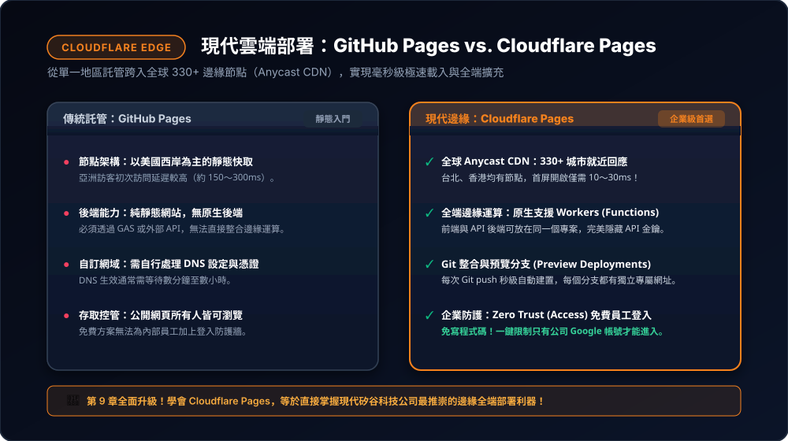
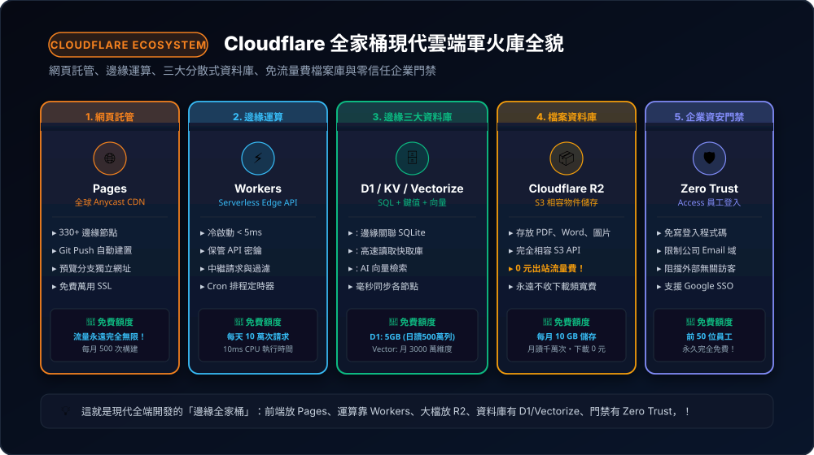

現代雲端邊緣平台：認識 Cloudflare 全家桶（網頁、資料庫、檔案庫與免費額度全解）
在現代軟體工程界，Cloudflare 已不僅僅是一家防護網路攻擊的公司，它已經進化為全球開發者公認的「最強 Serverless 雲端軍火庫」！本章將全面解構 Cloudflare 的五大核心能力：網頁託管 (Pages)、邊緣運算 (Workers)、三大分散式資料庫 (D1 / KV / Vectorize)、零流量費檔案儲存 (R2) 與企業門禁 (Zero Trust)，並附上最完整的永久免費額度指南，為第 10 章的企業級 AI 知識庫做好最扎實的技術準備！
9-1 概念進化：從 GitHub 跨入 Cloudflare 全球 330+ 邊緣節點
在第 3、4 章中，我們學會使用 GitHub Pages 發布網站。GitHub Pages 很好，但它是以美國西岸為主的單一靜態伺服器，亞洲訪客開啟時延遲常在 150～300 毫秒（ms）。
而 Cloudflare 擁有全球超過 330 個城市的 Anycast 邊緣網路（包含台北、高雄與香港）。當台灣的使用者點開你的網址時，請求是由離他最近的本地資料中心在 10～30 毫秒內 瞬間回應！

資料直接駐留在邊緣，帶來極致的載入速度，並自帶免費 SSL 萬用憑證與頂級 DDoS 流量防護。
9-2 網頁與運算雙核心：Cloudflare Pages 託管與 Workers 邊緣運算
1. Cloudflare Pages（現代前端網站託管）
專門用來放 HTML、CSS、JavaScript 靜態網站或 React/Vue 前端專案：
- 一鍵 Git 整合：授權 GitHub 儲存庫，每次
git push後 10 秒內全球自動編譯上線。 - 分支獨立預覽（Preview Deployments）：開新分支時，Cloudflare 自動為該分支派發獨立測試網址，主管與客戶驗收不干擾正式線上網站。
- 自訂網域免煩惱：免費綁定專屬品牌網域名稱，永久自動配置免費 SSL 安全鎖頭。
- 🎁 免費額度：⭐ 出站流量永遠完全無限制（Unlimited Bandwidth）！每月提供 500 次自動建置（Builds）。
2. Cloudflare Workers（無伺服器邊緣後端）
不用租用虛擬主機，直接在全球 330+ 節點上執行輕量後端代碼：
- 毫秒級冷啟動（< 5ms）：採用 Google V8 隔離區技術，速度是傳統 AWS Lambda 的 100 倍。
- 金鑰安全保管（Secrets）：後端支援環境變數加密，可安全存放 Google API Key 或資料庫密鑰，前端瀏覽器完全看不到！
- 全端一體化（Pages Functions）：只要在專案新增
functions/目錄，就能讓靜態網站秒變具備 API 後端運算能力的全端系統。 - 🎁 免費額度：⭐ 每天 100,000 次免費請求（10 萬次/天），每次請求享有 10ms CPU 執行時間（等待網路/資料庫的 I/O 時間不計入）。
🤖 實戰必學：如何授權讓 Antigravity 以 CLI（Wrangler）執行 Cloudflare 任務？
就像我們在第四章使用 gh 控制 GitHub 一樣，Cloudflare 官方也提供了一款強大的命令列工具——Wrangler。只要完成授權，你就可以直接動口叫 Antigravity 幫你部署網站、建立資料庫或設定金鑰！
在終端機輸入一行指令：
npx wrangler login
系統會自動開啟預設瀏覽器跳出 Cloudflare 授權頁面，點選「Allow（同意授權）」即大功告成！憑證會自動儲存在電腦本機中。
免跳出瀏覽器、不卡終端機的專業做法：
- 登入 Cloudflare ➔ 右上角「我的設定檔」➔「API 權杖」。
- 點擊「建立權杖」，選用「Edit Cloudflare Workers」範本。
- 在專案根目錄
.env放入：
CLOUDFLARE_API_TOKEN=你的權杖
9-3 邊緣資料庫三劍客：D1 (SQL)、KV (快取) 與 Vectorize (向量庫)
過去在邊緣執行後端最怕「資料庫依然留在美國，連線還是慢」。Cloudflare 推出三種原生邊緣資料庫，讓資料直接住在運算節點旁邊：
邊緣關聯式 SQL 資料庫
基於 SQLite 標準，支援標準 SQL 表、Join 關聯查詢與交易機制。
每日讀 500 萬列 / 寫 10 萬列
全球超高速鍵值快取庫
Key-Value 字典資料庫，讀取延遲低於 10ms，適合存放使用者權杖與設定檔。
每日讀取 10 萬次 / 寫 1 千次
AI 專用向量檢索資料庫
專為 RAG 知識庫設計！用來存放 Embeddings 向量並執行毫秒級餘弦相似度搜尋。
每月 3,000 萬維度檢索查詢
9-4 檔案資料庫 R2：完全免出站頻寬費（Zero Egress Fees）的 S3 相容儲存
在雲端儲存領域，AWS S3 是最知名的物件儲存服務，但它有一項令所有企業聞風喪膽的收費陷阱——「下載流量費（Data Egress Fees）」！當你的使用者頻繁下載 PDF 或圖片時，每 GB 都要被抽取高額頻寬費。
🔥 Cloudflare R2 的革命性承諾：
Cloudflare R2 完全相容 Amazon S3 的 API，用來存放**公司規章 PDF、圖片、備份檔或大容量文件**，並做出了顛覆業界的承諾：
- ⭐ 出站下載流量費永遠為 0 元（$0 Egress Fees）：無論檔案被下載幾百萬次，頻寬費用永遠是 0 元！
- 🎁 免費儲存容量：**每個月 10 GB 永久免費**！
- 🎁 免費操作次數：每月 100 萬次上傳/寫入（Class A），以及每月 1,000 萬次讀取/下載（Class B）！
9-5 企業安全門禁：Cloudflare Zero Trust Access 前 50 人完全免費
很多開發者自己寫網站，最怕把內部管理系統或手冊放到公開網路上被外人看光。傳統做法必須自己寫使用者帳號表、登入畫面、加密密碼與 Session 機制，既費時又容易有資安漏洞。
🛡️ 免寫一行登入程式！零信任身分防護牆：
Cloudflare 提供了名為 Zero Trust (Access) 的頂級安全功能：
- 只要在後台勾選設定，就能在網頁前罩上一道安全門禁。
- 限制企業郵件網域：設定只有
@yourcompany.com的同仁輸入 Email 收到一次性 6 碼驗證 PIN 碼，或透過 Google Workspace 登入才能進入。 - 無授權的外部陌生訪客會直接被邊緣防火牆阻絕（403 Forbidden），完全摸不到內部網頁！
- 🎁 免費額度：⭐ 前 50 位使用者（Seats）永久完全免費，極度適合中小企業、新創團隊與內部專案！
9-6 全套免費額度總整理速查表與實戰部署驗收
綜合以上五大核心功能，Cloudflare 構建出了一套令全美開發者驚豔的「現代雲端軍火庫」：

網頁託管 (Pages) + 邊緣運算 (Workers) + 三大資料庫 (D1/KV/Vectorize) + 零流量費檔案庫 (R2) + 企業門禁 (Zero Trust)。
📊 Cloudflare 核心服務永久免費方案（Free Tier）極限速查表：
| 服務類型 | 服務名稱 | 主要用途 | 永久免費額度標準 | 超額後限制 / 備註 |
|---|---|---|---|---|
| 前端網頁 | Pages | 網站與前端託管 | 流量完全無限、月建置 500 次 | 超額後暫停當月自動建置，網站照常運作 |
| 邊緣後端 | Workers | Serverless API / 中繼 | 每天 100,000 次請求、10ms CPU | 超額後當日回傳 1027 錯誤，次日早 8 點重設 |
| SQL 資料庫 | D1 | 邊緣關聯 SQLite | 5 GB 容量、日讀 500 萬列 / 寫 10 萬列 | 超額後操作暫時受限 |
| 鍵值快取 | Workers KV | 高頻讀取快取庫 | 1 GB 容量、日讀 10 萬次 / 寫 1,000 次 | 適合存放全域設定檔與 Token |
| 向量資料庫 | Vectorize | AI 向量檢索 (RAG) | 每月 3000 萬維度儲存 & 查詢 | 大約可存 3.9 萬條 768 維手冊段落 |
| 檔案儲存 | R2 | PDF/圖片/文件儲存 | 每月 10 GB 儲存、下載流量費 0 元！ | 每月 100 萬次寫入、1000 萬次讀取 |
| 資安門禁 | Zero Trust | 員工信箱身分驗證 | 前 50 位使用者永久免費！ | 免買商業防火牆，中小企業極度夠用 |
徹底搞懂了 Cloudflare 全家桶的威力和免費額度後，我們已經擁有了頂尖的雲端邊緣基礎建設！在接下來的**第 10 章**中，我們將深入剖析當前 AI 時代最強大的開源關聯與向量資料庫——**Supabase** 與其核心 **pgvector 引擎**，為第 11 章的四核聯動企業智慧新人手冊庫打下最堅固的資料基底！